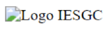
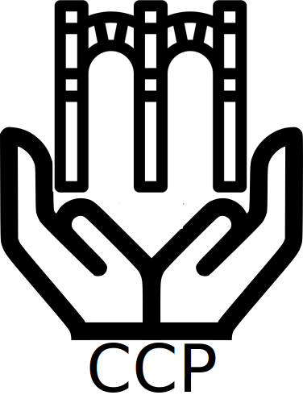

3.3 IMÁGENES
3.3.1 Diferencias entre la etiqueta title y alt.
Respuesta
Son atributos que se puede utilizar en la etiqueta <img>. La diferencia entre ambos es atributo estriba en que TITLE es un un texto emergente (tooltip), que da una información adicional cuando pasamos el puntero por la imagen, mientras que ALT proporciona un texto alternativo a la imagen cuando esta no está disponible, por lo que ALT es un atributo obligatorio, ya que es muy importante para la accesibilidad web. Por tanto, TITLE es importante que contenga palabras clave que permitan localizar la imagen desde el buscador y el ALT debe ser una descripción de lo que muestra la imagen.
3.3.2 ¿Para que se utilizan los elementos <map> y <area>?
Respuesta
Estas dos etiquetas sirven para construir un mapa de imagen, que es una imagen donde dentro de la misma hay varios hipervínculos hacia otros recursos. La etiqueta <map> define el mapa de imagen con zonas seleccionables del lado del cliente, mientras que atributo area define las zonas seleccionables, que pueden ser un rectángulo, un círculo ó un polígono: El rectángulo tiene 2 coordenadas: la esquina superior izquierda y la inferior derecha. El círculo las coordenadas del centro del círculo y el tamaño del radio. El polígono cada uno de las coordenadas que lo forman.
3.3.3 Escribe un documento html que muestre el siguiente resultado.
Respuesta
<!DOCTYPE html>
<html lang="es">
<head>
<title>U03.Act3.3 Imágenes</title>
<meta charset="utf-8">
<meta name="description" content="Actividades de lenguaje de marcas, LMSGI">
<meta name="autor" content="Andrés Heras">
<meta name="keywords" content="HTML5, marcas, etiquetas, img, imágenes">
</head>
<body>
<img src="../" alt="Logo IESGC">
</body>
</html>
3.3.4 Diseña un logo para el sitio “Córdoba, ciudad patrimonio” y utilízalo como icono de página (favicon). Trabaja con las iniciales (CCP) y algún editor gráfico online como canva.
3.3.5 Completa el documento y crea en el logo un enlace a la página del IES Gran Capitán.
<!DOCTYPE html>
<html>
<body>
<image src="logoiesgc.png" alt="HTML tutorial">
</body>
</html>
Resultado:
Respuesta
3.3.6 Incluye una imagen en cada una de las páginas del sitio “Córdoba, ciudad patrimonio”.
Respuesta
3.3.7 Añada al sitio “Córdoba, Ciudad Patrimonio” una nueva página con unas 5 fotos que presente un recorrido turístico por Córdoba.
Respuesta3.3.8 Utiliza la imagen adjunta del sistema solar para crear una página con una imagen con enlaces a los diferentes elementos (planetas, lunas, ...) que aparecen en la misma.